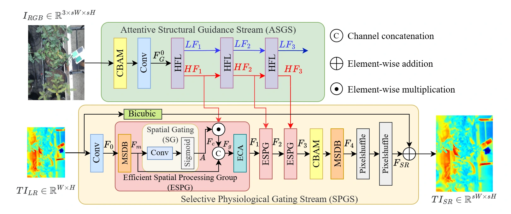
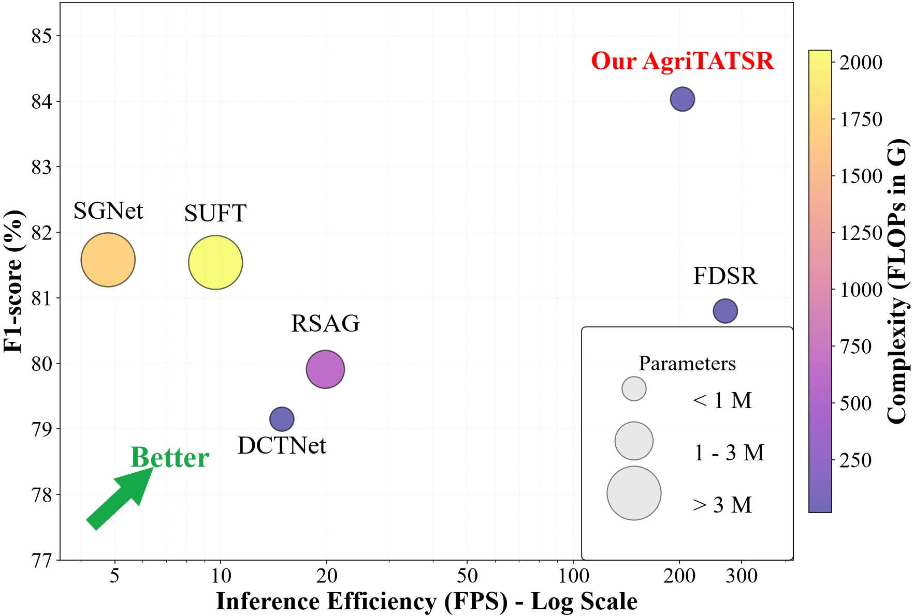
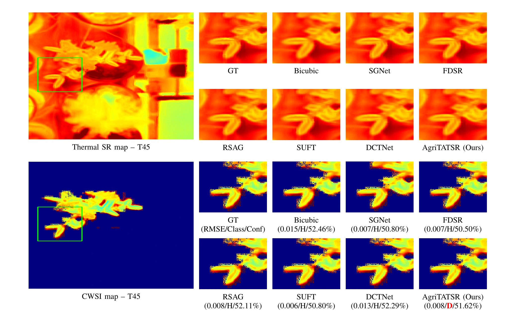

RGB structural guidance
The Attentive Structural Guidance Stream extracts hierarchical high-frequency priors from high-resolution RGB images.
AgriTATSR: Agricultural Task-Aware Thermal Super-Resolution for Crop Water Stress Assessment
International Conference on Advanced Technologies for Communications (ATC) · 2026
1 Hanoi - Amsterdam High School for the Gifted, Hanoi, Vietnam
2 Department of Computer Science, National Yang Ming Chiao Tung University, Taiwan
3 VNU University of Engineering and Technology, Hanoi, Vietnam
† Equal contribution. * Corresponding author: Dang BuiDinh.
Recovering thermal detail that matters for crop water stress assessment.
AgriTATSR is an RGB-guided thermal image super-resolution framework for crop water stress assessment. An Attentive Structural Guidance Stream extracts high-frequency priors from RGB imagery, while a Selective Physiological Gating Stream selectively integrates those priors into the thermal reconstruction. Multi-objective supervision balances reconstruction fidelity with downstream Crop Water Stress Index (CWSI) based drought classification. Evaluation on a multi-species greenhouse dataset measures physiological assessment accuracy as well as computational efficiency on desktop and edge hardware.
The Attentive Structural Guidance Stream extracts hierarchical high-frequency priors from high-resolution RGB images.
Efficient Spatial Processing Groups selectively integrate structural cues into the thermal reconstruction stream.
Multi-objective training considers reconstruction quality together with downstream CWSI-based drought classification.
High-resolution RGB guidance and a low-resolution thermal image enter complementary streams. Multi-scale features, spatial gating, and efficient channel attention guide reconstruction while preserving physiologically relevant thermal structure for CWSI estimation.

On the greenhouse dataset, AgriTATSR achieves an average drought-classification F1-score of 84.03%. The paper compares reconstruction and classification performance with guided super-resolution baselines and evaluates inference efficiency on an NVIDIA RTX 4080 and a Jetson Nano 4GB. In the illustrated Silver Fir (T45) example, AgriTATSR preserves the thermal signals needed to identify drought.


@inproceedings{2026atcagritatsr,
title = {{AgriTATSR}: Agricultural Task-Aware Thermal Super-Resolution for Crop Water Stress Assessment},
author = {NguyenPhu, Phan and TranQuang, Minh and NguyenQuang, Sang and BuiDinh, Dang},
booktitle = {International Conference on Advanced Technologies for Communications (ATC)},
year = {2026}
}